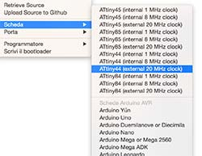

4 - Electronics Production
Intro
The assignment of the third week was to mill and solder an ISP.
Making an ISP programmer
I used a Roland monoFab SRM-20 milling machine to mill the circuit shared on the Fabacademy website. The task was quite easy and was a good way to approach the milling machine. Then I soldered the components on the PCB. Even if I'm quite familiar with electronics I'm not used to solder SMD components. Moreover some components had packages really difficult to use. The quartz was too big and I had to put it on one side and the diodes were too small, so I had to create a little jumper with the stain. I made the smoke test and it worked fine.


Programming the FabIsp
I used avrdude line command and Arduino as ISP. However, as we are using an Attiny 44a, I had to change the device signature in the avrdude.conf . I wasn’t able to find online references about other values to change in that file.
To tell avrdude to use Arduino as ISP I changed this line in the Makefile:
AVRDUDE = avrdude -c arduino -P /dev/tty.usbmodem1421 -p t44 # edit this line for your programmer
For the connections I followed this tutorial http://highlowtech.org/?p=1695 and this reference http://arduino.cc/en/Reference/SPI.

The connection worked fine however I had this error and I wasn't able to solve it.
Then I decided to put the Arduino bootloader in it. To do this I had to tell to the Arduio IDE the characteristics of the board. Inside the /hardware folder of Arduino IDE I added the boards.txt taken from https://github.com/damellis/attiny/tree/master/attiny but, once again I found the reference for the ATtiny44 and not for the 44a.After adding the file another section appeared in the "boards" submenu:

In the board.txt file i had to add also this line: attiny44-20.bootloader.tool=avrdude
However I got this error and I wasn't able to solve it:
The I tried with the usbasp programmer and it worked fine. I changed a line in the Makefile to tell to the system to use usbasp:
AVRDUDE = avrdude -c usbasp -p $(DEVICE) # edit this line for your programmerAfter the make clean and make hex command I sent the make fuse command with this output:
Then i checked my system to see if the FabISP was recognized.

The FabISP was recognized so it was ready to be used as a programmer recognized by the Arduino IDE as USBTinyISP.
 Attribution, non-commercial, share alike.
Attribution, non-commercial, share alike.